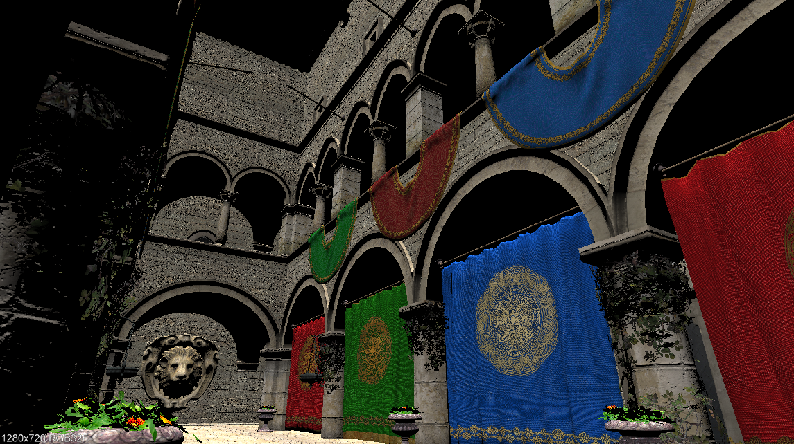
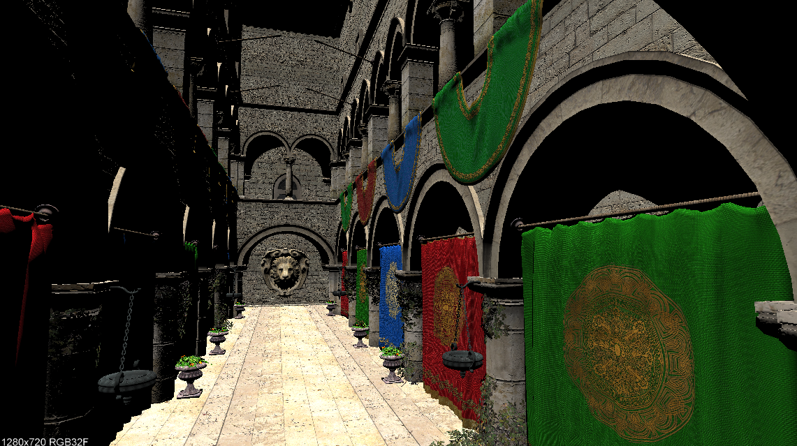
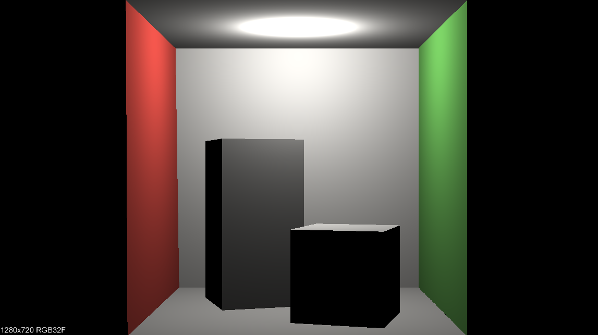
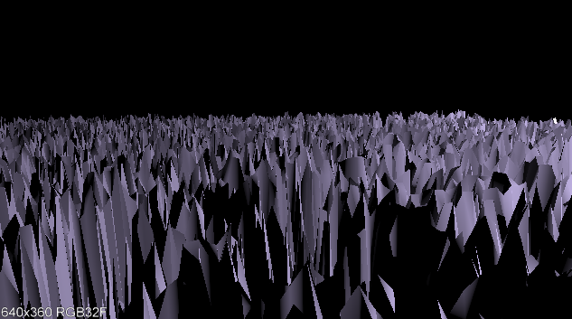

|
Blue Project
Kyle,Nigel,Jamie
|
|
Blue Project
Kyle,Nigel,Jamie
|
The class RayTracer provides an implementation to render an image given the G3D::Settings, an array of the scene's triangles Array<shared_ptr<Surface>>, a definition of the lights in the scene shared_ptr<LightingEnvironment>, a description of the camera shared_ptr<Camera>, and some stats. After making a RayTracer with create(), a user can ask it to render a scene as described by the given paramaters. The implementation races over each pixel (RayTracer::traceAllPixels), and then from one pixel traces the light received (RayTracer::traceOnePixel) by casting a light ray (RayTracer::castRay) to determine whether or not a ray casted out from that pixel actually hits a surface, calling RayTracer::L_scatteredDirect if the ray does hit a point on a surface to find the radiance emitted from that point. L_scatteredDirect computes the radiance by iterating over each light and determining whether or not it contributes to the radiance emitted from that surface. After setting the radiance for each pixel of an image, the render method can return an image to the user.
The GUI allows the user to set the resolution and choose whether or not to use multithreads and/or TriTree. After the image is rendered, the same gui pane reports information back to the user and pops the rendered image out into a separate window.
Random Art Generator
The Terrain Changing Process Our terrain is changed based on the output of a random math function that we evaluate over a changing constant. The function is composed of trigonometric functions, averages, circle functions, etc. The function is randomly generated. The code for this process is contained within the Art class, and the next image is generated through the Art::nextImage() method. The Art class uses a separate Expr class to store an abstract relation of the function and to help with function evaluation. The documentation of Art and Expr contains more details about the random art generation process. The shared_ptr<Image> returned by the Art::nextImage() method is then used by App::onGraphics3D() to save out an image file continuously over time. This image file is a png which is used by our scene.any file "blue". Whenever a new image file is written, we save it out and then reload the scene and clear the cache. Because we must deal with hard disk memory, this process is somewhat slow.
The Video Creation Process We added local variables to the App.cpp class and a App::onVideoButton() method that allows the user to click and button and begin the video recording. The video is generated entirely using the RayTracer::render() image results. The recording is done in the App::onGraphics3D() method.
|  |
| Sponza rendered with our implementation of RayTracer |
|  |
| Sponza rendered with our implementation of RayTracer |
|  |
| Cornell Box rendered with our implementation of RayTracer |
|  |
| Unique Scene rendered with our implementation of RayTracer |
Our group was inspired by the film Exodus(2013) by Magnus Ostergren and Thomas Oger, specifically copying cinematography from 00:00-00;:05 sec, and 00:18 - 00:40 sec. We were compelled by the low polygonal style and calm yet destructive tone. We were also fortunate enough to have very similar ambient lo-fi music available to use, Silhouette Dancing by the musical group Old Hibiscus (Jamie's brother Max is in it!).
▶ Play Video |
| Blue's storyboard |
Kyle decided to convert code from a CSCI 334 project where we made a random math function art generator. The code outputs a PNG image that can then be loaded into a heightfield. To achieve the low polygon feel, we used the OFF heightfield generator from last week's lab but scaled down the number of sample points used to make the OFF file.
The results were great, however we ran into a problem when we rendered the image using the ray tracer we implemented this week. Looking at the feature test scene provided by G3D, we quickly realized that the only way to render a heightfield with our ray tracer was to have it as an G3D::ArticulatedModel and call G3D::ArticulatedModel::loadHeightfield. So we nixed the OFF generating code and decided to output the random art PNG to be grabbed and loaded by our scene. To keep the low polygon feel, we prefered random art that had a lot of noise.
Because the heightfield was being loaded from the image - we realized by changing the underlying image we could make the heightfield move - spooky. Here's an example of how the generated random art image looked as it was changed over time:
▶ Play Video |
| Randomly generated art over time |
▶ Play Video |
| Terrain modified by the randomly generated art |
Tie it all together with Nigel's awesome editing skills and we get:
▶ Play Video |
| Terminus |
Ray Casting and Indirect Light The errors in assuming incident light was only from the sources results in a picture without with light diffusion. It is quite apparent in Sponza, where there are pitch black spots that would otherwise be visible with indirect light. An algorithm would involve going through the light array and computing the radiance after multiple bounces instead of just using direct illumination.
Mysteries of TriTree The goal here is to be able to recursively check subsets of triangles that are closest to the incoming ray. Thus, you would start by forming a tree of adjacent triangle groups. When a ray comes in, check which group is closest to the ray and explore that group in the same manner. Once you get down to a small enough gro up, you could just iterate through the triangles and find the interestion.
Other Primitives Well, I'd need to redifine how meshes are described. In this case, moving from 3 to x point primatives. Further, I'd need to define how rays interact with the new primatives. The shading normal would change to consider the perpendicular to the tangent, since you can't take the cross product of a spherical surface.
Our group was able to start the week very efficiently. We worked together and got all the required work (with the exception of the unique scene) done by Saturday afternoon. Our group averaged 5 hours per person on required work. However, once the unique scene was the only task left - time exploded. Getting the heightfield to move while the camera was also working was complicated, and testing intersection over thousands of triangles made rendering a slow and painful process. Kyle spent about 30 hours on optional work, Jamie spent 10 hours, and Nigel spent about an hour (he was sick :( ).
The challenge of this lab was fitting. The only issue was that the same week we were asked to copy the cinematography from a film watched in class, we were also using our own renderer to make films for the first time. It would have been more enjoyable and impactful to focus on cinematography during a lab where we still had the flexibilty of using the G3D renderer.
We learned to benefit from getting a lab done early. However, we also learned that sometimes done is done.
 1.8.7
1.8.7


{kind=link}
{kind=link}
{kind=link}
{kind=link}
{kind=link}
{kind=link}